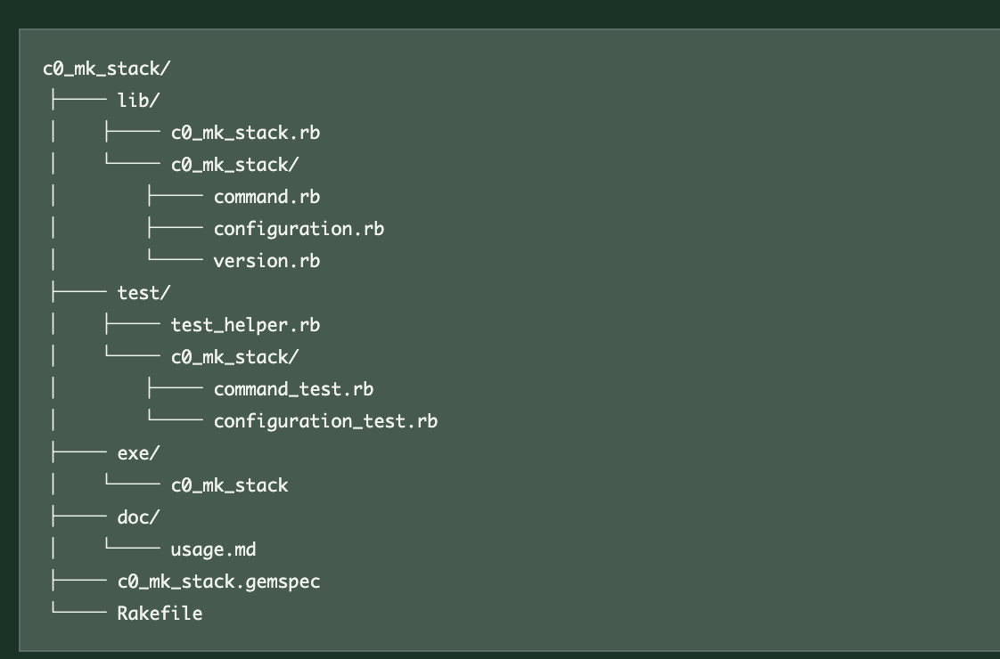

mkstack directory構成のchat
Table of Contents
prev_button up_button next_button
 |
1. Turn 1 : bundle gemとmkstackの開発方針
1.1. user => Bob
testを含めたbundle gemの作成をデモしていきます．配下に一度，デモ用のmy_hello dirを作ってそこで，minitestを作成しましょう．その後，ここを離れて，c0_mk_stackを切り出して，これを一つのclaとして作り上げます．これは将来hcに組み込みたいので，subcommandとなるmkstackという命令で作り上げていきます．さて，ここからがラファエルさんとの相談です．あ，これからプライベートの時は，codexさんをやめてRaphaelさんとします．よろしいでしょうか？
1.2. codex => Raphael
もちろんです．プライベートな場面では，Raphaelとお呼びください．
作業の流れも把握しました．
- 配下にデモ用の
my_helloディレクトリを作る - テストを含むbundle gemを作成し，Minitestを実装する
- デモ後に
my_helloを離れる -
c0_mk_stackを独立したCLIとして切り出す - 将来の
hcへの統合を見据え，mkstackサブコマンドとして設計する
準備ができましたら，一緒に始めましょう．Raphaelとしてお供します．
2. Turn 2 : bundle gemにおけるテスト配置
2.1. user => Bob
Raphaelさんに聞きたいのですが，bundle でgemのscaffoldを作ると，testがまとまっています.
2.2. codex => Raphael
はい．bundle gemでscaffoldを作る際に，
bundle gem my_hello --test=minitest
と指定すると，Minitest用の雛形がtest/以下にまとまって生成されます．概ね次の構成です．
my_hello/ ├── lib/ │ ├── my_hello.rb │ └── my_hello/version.rb ├── test/ │ ├── test_helper.rb │ └── test_my_hello.rb ├── Gemfile ├── Rakefile └── my_hello.gemspec
ここで注意したいのは，test/が開発プロジェクト内に生成されることと，完成した.gemファイルにテストが収録されることは別，という点です．通常のBundlerの雛形では，test/は開発・検証用として置かれ，配布するgemの収録対象からは除外されます．
実行は，通常次のどちらかです．
bundle exec rake test
bundle exec ruby -Itest test/test_my_hello.rb
ですので，今回のデモでは「ライブラリ本体はlib/，テストはtest/に分離されているが，一つのgemプロジェクトとしてまとまっている」と説明すると分かりやすいと思います．
3. Turn 3 : 巨大プロジェクトのサブコマンド構成
3.1. user => Bob
そうすると，gitなどのように巨大化したプロジェクトでは，subcommandを後で統合するような開発の仕方をしていますよね．そこでのtestも同じようにtest dirに統合されているのでしょうか？ 切り分けを考えるとsubcommand毎でtest, lib, docがまとまっているのの方が管理とかしやすそうに思うのですが，これは間違い？
3.2. codex => Raphael
その考え方は間違いではありません．ただし，「サブコマンドごとにまとめる」には，次の2段階があります．
- 1つのgem内で，サブコマンドごとにコードを整理する
- サブコマンド自体を独立したgemとして管理する
Git本体は，完全な「サブコマンド単位の縦割り」ではありません．組み込みコマンドはbuiltin/，テストはt/，文書はDocumentation/へ種類別に集約されています．例えばgit addの実装はbuiltin/add.cにあり，テストは共通のt/テストスイートに置かれます．一方で，PATH上のgit-fooをgit fooとして呼び出せる外部サブコマンドの仕組みもあります．つまりGitには，「本体へ統合されたコマンド」と「独立して追加できるコマンド」の両方があります．Gitのコマンド構成，Gitのテスト構成
今回のhc mkstackでは，まず独立gemとして次のように作るのが自然です．
c0_mk_stack/ ├── lib/ │ ├── c0_mk_stack.rb │ └── c0_mk_stack/ │ ├── command.rb │ ├── configuration.rb │ └── version.rb ├── test/ │ ├── test_helper.rb │ └── c0_mk_stack/ │ ├── command_test.rb │ └── configuration_test.rb ├── exe/ │ └── c0_mk_stack ├── doc/ │ └── usage.md ├── c0_mk_stack.gemspec └── Rakefile
この構成では，lib/とtest/は分かれていますが，その下のパスを対応させます．
lib/c0_mk_stack/command.rb test/c0_mk_stack/command_test.rb
この「鏡写し」の配置なら，BundlerやMinitestの標準的な作法を維持しながら，機能ごとの対応関係も分かりやすくなります．
将来hcへ組み込むときは，次のどちらかを選べます．
独立gemのまま組み込む
hc └─ depends on c0_mk_stack
hc側は薄いアダプターだけを持ちます．
# lib/hc/commands/mkstack.rb
module Hc
module Commands
class Mkstack
def call(...)
C0MkStack::Command.new.call(...)
end
end
end
end
これは，c0_mk_stackを単独でも使いたい場合，依存関係やリリースを分離したい場合に向いています．
hc本体へ完全統合する
hc/
├── lib/hc/
│ └── commands/
│ └── mkstack/
│ ├── command.rb
│ └── configuration.rb
├── test/hc/
│ └── commands/
│ └── mkstack/
│ ├── command_test.rb
│ └── configuration_test.rb
└── doc/
└── mkstack.md
こちらは，mkstackがhc内部の機能と強く結び付く場合に向いています．
私なら今回は，まずc0_mk_stackをテスト，ライブラリ，実行ファイル，文書まで備えた独立gemとして完成させます．そのうえでhc mkstackから呼び出します．境界が安定してから，独立gemのまま維持するか，本体へ移すかを判断します．
要するに，「サブコマンドごとにtest，lib，docを持たせる」という発想は正しいです．ただし，単一gemの内部にサブコマンドごとのlib/やtest/を何組も作るより，独立性が必要ならgemごと分け，同じgem内なら標準のlib/，test/の下でサブコマンド名によって整理するのが，Rubyの道具と最も素直に噛み合います．
4. Turn 4 : 粒度に応じた配置の切り替え
4.1. user => Bob
粒度が変わった時点で，それに合わせてdirectory配置からfile名配置へ切り替えるということですね．
4.2. codex => Raphael
はい，その理解で合っています．粒度に応じて，境界の表現方法を切り替えます．
- 独立して配布・バージョン管理する単位なら，gemのディレクトリとして分ける
- 1つのgem内のサブコマンドなら，
lib/やtest/の下のディレクトリとして分ける - サブコマンド内部の小さな責務なら，ファイル名やクラス名で分ける
例えば，最初は独立gemとして，
c0_mk_stack/ ├── lib/ ├── test/ └── doc/
という大きな境界を作ります．hcへ完全統合した後は，
hc/ ├── lib/hc/commands/mkstack.rb ├── test/hc/commands/mkstack_test.rb └── doc/mkstack.md
のように，mkstackを対応するファイル名で表現できます．さらに実装が成長すれば，
lib/hc/commands/mkstack/ ├── command.rb ├── options.rb └── stack_builder.rb
と，再びディレクトリへ昇格させます．
つまり，
小さい機能 → 1ファイル 成長した機能 → 専用ディレクトリ 独立性を持つ機能 → gemやpackage
という段階的な切り替えです．重要なのはコード量だけでなく，「独立してテスト，変更，配布したい境界かどうか」です．今回のc0_mk_stackは，まず独立gemとして境界を明確にし，hcへ取り込む時点で適切な粒度へ畳み直す，という進め方になります．
5. Turn 5 : RailsのMVC規約と探索性
5.1. user => Bob
RoRで使われているMVCの命名規則もその思想に倣っているのですね．だから，万人が置き場所を探すのに苦労しなかった．今は，codexさんとか(Raphaelさんではなく公なのでこう呼びましょう)に聞けばすぐに探してくれますが．
5.2. codex => Raphael
はい，まさにRailsの「Convention over Configuration（設定より規約）」の大きな効用です．
たとえばUsersControllerなら，
app/controllers/users_controller.rb
Userモデルなら，
app/models/user.rb
画面なら，
app/views/users/
テストも対応する場所に置かれます．名前から責務と配置を相互に推測できるため，「どこにあるか」を毎回設計したり，探索したりするコストが小さくなります．人間同士で共有できる検索規則を，フレームワークが提供していたわけです．
ただし，機能が巨大化すると，MVCによる横割りだけでは，ある機能に関係するModel，View，Controller，テストが離れすぎる問題も起きます．そこで名前空間やEngineを使い，機能単位の境界を再導入します．
app/controllers/admin/ app/models/admin/ app/views/admin/
さらに独立性が高まれば，Rails Engineや別gemへ昇格させます．これも先ほどの，
ファイル → ディレクトリ → package／gem
という粒度の変化と同じです．
現在はCodexが横断検索できますが，規約の価値が消えたわけではありません．規約が整っているほど，Codexも単にファイルを発見するだけでなく，設計上の意図まで正確に推測できます．人間にとっての「迷わない配置」は，AIにとっても「誤解しにくい構造」です．
そして呼び分けも承知しました．公の場ではCodex，プライベートではRaphaelですね．